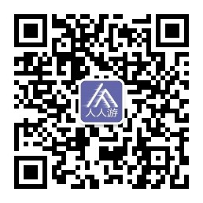

我公司成立于2018年，为了适应旅游市场的发展需求，公司定位为全球的华人提供欧洲区域的华语专业导游服务，致力于开发有别于传统导游业的旅游项目。公司提供同行业务中首创的真正无潜规则的旅游以及优质服务，客户的满意度及优质的反馈是我们追求的目标。
公司自创建以来注重各项制度的完善，公司聘请匈牙利官方注册持证华语导游，并定期加强导游培训，提升业务能力，公司用心为客户服务，不允许收任何性质的小费及消费的提成和回扣，拒绝潜规则。
公司坚持以先进创新适应市场需求为基础，有专业敬业的导游团队，规范的操作方式，完善的游后的服务，同时与国内、外的各大旅行社长期稳定的多方面合作，目前是匈牙利最具备接待能力以及高服务水平的公司之一。
公司经营内容有：商务考察接待(国家和政府机构)、房产考察、健康旅游、原生态环境旅游、猎狩旅游、体育项目交流游、艺术交流游、学术交流游、蜜月旅游、私人包车等欧洲深度游项目。
地址：匈牙利 布达佩斯 Budapest-Keleti, 1087
电话：0036-30-9574162
邮件：rrjourneys@gmail.com
网站：http://www.rrjourneys.com
更多旅游资讯敬请关注微信公众号："人人游rrjourneys"，或者扫描下面的二维码。
